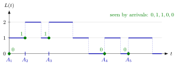

Arrival-Average Performance¶
Definition¶
Let jobs arrive at times , and let job have waiting time and sojourn time . An arrival-average (or customer-average) performance measure averages one observation per job. Assuming the limits exist, the expected waiting time and the waiting-time distribution as seen by arrivals are
and and are defined in the same way. The number of jobs that job finds in the system is , the value of just before the arrival, so the distribution of the number in system as seen by arrivals is
The are the arrival-average state probabilities, and the average number seen by arrivals is . The notes write both for this arrival average and for the time average; the context must say which one is meant.
Interpretation¶
An arrival average answers the question a customer asks: how long did I wait, and how many people did I find in front of me? Every job contributes one observation, so the measure describes the experience of the typical customer.

The figure shows the five-job path of Example 1. The blue step function is ; each green dot sits at the arrival time on the level before the upward jump, because an arriving job does not count itself. The arrivals see , so three of the five see an empty system, although the system is empty for only of the minutes.
The definitions are counts divided by the number of jobs, using indicators . The limits are assumed to exist; the notes state them for rate-stable systems without proof. When jobs arrive faster than the server can handle them, the queue, and with it , grows without bound, and is infinite.
Arrival averages are what a simulation produces directly: the recursions for and give one number per job, and averaging them estimates or the fraction of jobs that wait at least , as in queue sample-path simulation. The common slip is to assume that what arrivals see equals what holds over time. A job that always arrives just after the previous one has left sees an idle server even when the server is almost always busy. In Week 4, PASTA gives a condition under which the two perspectives agree.
Key Results¶
- Arrival averages of , and are the customer-perspective measures (4.2.1)–(4.2.2); they sample the system only at arrival epochs (TF 4.2.5).
- Since for every job, averaging gives whenever two of the three averages exist.
- Counting per unit time gives a rate: if exists, then (TF 4.2.1).
- In general, what arrivals see differs from the time-average performance: with constant inter-arrival times and service times , every arrival sees an empty system, but the time-average number in system is (TF 4.2.3, Ex 4.2.6).
- For Poisson arrivals the arrival and time averages of the state coincide; this is PASTA (Week 4).
Examples¶
1. Five jobs. Jobs arrive at minutes with service times at one first-come-first-served server, starting empty. With the departure times are , so and . Hence the arrival averages are and minutes, and the fraction of jobs that wait is . Job 3 arrives at , when job 1 has left and job 2 is in service, so it sees job; the five jobs see , giving , and an average of jobs seen.
A = [0, 1, 2.5, 6, 7.5] # arrival times
S = [2, 2, 1, 1, 1.5] # service times
D, W, seen = [], [], []
for k in range(len(A)):
start = max(A[k], D[-1]) if D else A[k]
D.append(start + S[k])
W.append(start - A[k])
seen.append(sum(D[j] >= A[k] for j in range(k))) # L(A_k-)
n = len(A)
print(sum(W) / n, seen.count(0) / n, sum(seen) / n) # 0.5 0.6 0.4
2. Hourly arrivals. Jobs arrive exactly on the hour and each needs minutes of service. Every job finds the previous one gone, so for all and , while the server is busy during of the time. Sampling at arrivals reports an always-idle server.
3. Dividing by the wrong count. In Example 1, four of the five jobs wait at most one minute, so the estimate of is . Dividing the count by the minutes instead gives , which is the rate at which such jobs arrive per minute, not a probability.
Prerequisites¶
- Arrival-Average State Probability
- Waiting Time
- Sojourn Time
- Rate Stability
- Indicator Random Variable
Related Concepts¶
- Time-Average Performance
- Arrival-Average State Probability
- Queue Sample-Path Simulation
- Single-Server Service Recursion
- Poisson Arrivals See Time Averages
- State-Dependent Arrival Rate
- Little's Law
Sources¶
- Stochastic Operations Research · Week 3
- N. D. van Foreest, Sample Path Analysis and Simulation of Stochastic Systems, Section 4.2
Aliases: arrival average, customer average, performance as seen by arrivals, as seen by arrivals, customer-perspective performance measure, job-average performance measure Keywords: \mathbb{E}[W], \mathbb{P}(W\le x), L(A_k-), \pi(n), empirical waiting-time distribution, average waiting time, average sojourn time, sampling at arrival epochs Symbols: infinity, lambda, pi, sum
Last updated: 29 October 2026 20:42
Arrival-Average PerformanceLittle's LawPoisson Arrivals See Time AveragesArrival-Average State ProbabilityWaiting TimeSojourn TimeRate StabilityIndicator Random VariableTime-Average PerformanceQueue Sample-Path SimulationSingle-Server Service RecursionState-Dependent Arrival Rate